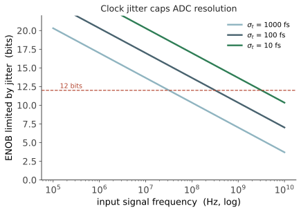

本页目录
电路 IV · 数据转换器与锁相环
层次：本科核心 + 硕博热门方向。 真实世界是模拟的，计算是数字的——数据转换器（ADC/DAC）是两者之间唯一的桥。而锁相环（PLL）提供整个芯片赖以同步的时钟。这两类电路的性能，往往直接封顶了整个系统能达到的水平：无线基站的容量、医疗设备的分辨率、处理器的频率，都卡在它们身上。
学习层：12 位 ADC，为什么可能只剩 8 位的有效信息？
1. 具体谜题：增加位数，还是先清理时钟？
一个标称 12 位的 ADC 采样 \(1\ \mathrm{GHz}\) 正弦输入，孔径抖动 \(\sigma_t=50\ \mathrm{fs}\)。理想量化 SNR 接近 \(74\ \mathrm{dB}\)，但抖动造成的 SNR 也有上限。若输入频率提高十倍，或者把时钟抖动减半，哪一种改变更有价值？同时，PLL 的环路带宽变宽到底是在压 VCO 噪声，还是在放进参考噪声？
先预测：输入频率提高十倍时抖动 SNR 下降约多少 dB；增加一位在量化受限时改善多少 dB；当抖动已成为主导误差时，再加两位 ADC 是否仍能提高 ENOB。
2. 先预测：把误差预算拆开再组合
实验先隐藏 SNDR、ENOB 和 PLL 曲线。请先判断：
- \(\mathrm{SNR}_{quant}\) 与位数的关系是每位约 3 dB、6 dB 还是 12 dB？
- \(\mathrm{SNR}_{jitter}\) 与 \(f_{in}\sigma_t\) 成正比还是反比？
- 独立量化噪声和抖动噪声的 dB 值应该直接相加，还是先回到线性噪声功率相加？
- PLL 带宽太窄或太宽，分别会让哪一类相位噪声穿过滤波器？
3. 最小心智模型：ADC 是误差预算，PLL 是噪声分流器
ADC 把连续时间/幅度映射到有限码字，量化误差、热噪声、失真和采样时刻误差共同决定有效位数；PLL 则通过反馈在参考源与 VCO 之间分配噪声。二者的共同工程结构是：先写出独立误差源，再用系统传递函数把它们汇总。
实验的 PLL 噪声模型是可解释的教学 proxy，不替代相位噪声积分、参考分频、环路阶数、PFD/CP 杂散和 VCO 的真实 \(1/f^3\)–\(1/f^2\) 谱。它只用于让“带宽是权衡而不是越大越好”可计算。
4. 形式机制与不变量：6 dB/bit、抖动上限和噪声功率
理想均匀量化给出
正弦输入的采样抖动限制为
独立误差必须在线性功率域相加：
因此 \(f_{in}\) 或 \(\sigma_t\) 增加十倍会使抖动 SNR 恶化 \(20\ \mathrm{dB}\)，而增加一位只给量化项约 \(6.02\ \mathrm{dB}\)。PLL proxy 以 \(B\) 为环路带宽，让参考噪声随 \(B\) 通过、VCO 噪声随 \(B\) 被抑制；其不变量是最终 ENOB 不能超过任何一个独立噪声源所允许的上限。
5. 交互实验：把转换器和时钟放在同一张预算图
无 JavaScript 时的静态读法：先把 \(\sigma_t=50\ \mathrm{fs}\) 作为**外部采样抖动**，取 \(N=12\)、\(f_{in}=1\ \mathrm{GHz}\)。理想量化 SNR 为 \(6.02\times12+1.76=74.0\ \mathrm{dB}\)，外部抖动 SNR 为 \(-20\log_{10}(2\pi\cdot10^9\cdot50\times10^{-15})\approx70.1\ \mathrm{dB}\)。脚本还会独立加入默认 \(20\ \mathrm{MHz}\) PLL proxy 方差；下表同时列出不含 PLL 的输入抖动基线和脚本默认的合成结果。
| 误差预算 | 结果 | 解释 |
|---|---|---|
| 量化 SNR | 74.0 dB | 12 位理想上限 |
| 外部抖动 SNR | 70.1 dB | 50 fs 在 1 GHz 的时刻误差（不含 PLL） |
| PLL 总时钟抖动 | 100.8 fs | 默认 20 MHz proxy 的参考/VCO 方差合成 |
| 有效抖动 / 合成 SNDR | 112.5 fs / 62.7 dB | 有效抖动先按方差合成，再与量化噪声合成 |
| ENOB | 约 10.1 bit | \((62.7-1.76)/6.02\)，若忽略 PLL 则为约 11.1 bit |
脚本提供位数、输入频率、抖动和 PLL 带宽控制，并画出量化/抖动/合成 SNR 与参考/VCO 噪声的两张 SVG 账本。默认参考抖动 \(30\ \mathrm{fs}\)、VCO 抖动 \(180\ \mathrm{fs}\)，带宽改变时会显示总时钟抖动的近似交点和当前 ENOB；它不会把标称位数当成有效位数。
6. 反例与失效边界：理想公式何时不够用？
- “增加 ADC 位数总能增加 ENOB”在抖动、热噪声或失真主导时不成立；量化项下降后，其他噪声成为 floor。
- “抖动只影响高频通信”错误；只要输入斜率大，采样时间误差都会转成幅度误差。
- “PLL 带宽越大锁得越快、噪声越小”忽略参考噪声穿透、环路稳定性和杂散；带宽要结合两侧噪声谱与相位裕度选。
- “dB 可以直接相加”把功率域与对数域混淆；独立噪声应先转回线性方差再合成。
- 真实 ADC 还受 INL/DNL、比较器失调、运放有限增益、参考噪声和前端带宽限制；本实验只隔离量化与抖动的主线。
7. 迁移题：为高速采集链分配预算
若系统需要 \(10\ \mathrm{GHz}\) 输入下的 \(9\) bit ENOB，先由抖动公式求允许的 \(\sigma_t\) 上限，再给 PLL、时钟分配、采样保持和 ADC 核心分别留出预算。若某一项预算被超出，你会优先降低输入频率、加大功耗换低抖动，还是改用过采样/噪声整形？请说明每个选择牺牲了什么。
一、量化：不可逆的信息损失
ADC 把连续幅度映射到 \(2^N\) 个离散码。量化误差在满量程 \(V_{FS}\)、\(N\) 位下均匀分布，其均方值为 \(\Delta^2/12\)（\(\Delta = V_{FS}/2^N\)），由此得到理想信噪比：
每增加一位，SNR 提高约 6 dB——这个"6 dB 每位"是整个混合信号领域的通用语言。
实际性能用有效位数衡量：
ENOB 总是低于标称位数，因为还有热噪声、失真、时钟抖动、失配。看到"16 位 ADC"要问的第一个问题是"ENOB 多少"——标称位数是包装，ENOB 才是真相。这与第四页"节点名称不对应物理尺寸"是同一种工业界的命名习惯问题。
二、采样：抖动的暴政
采样时刻的随机误差（孔径抖动 \(\sigma_t\)）会转化为幅度误差。对频率为 \(f_{in}\) 的正弦信号：

含义极强：高分辨率与高输入频率不可兼得。要在 GHz 输入下取得 12 位以上，需要飞秒级的时钟抖动——这本身就是一个极难的 PLL 设计问题。这就是为什么 ADC 的"分辨率×速度"存在一条清晰的技术前沿（业界常用 Walden 与 Schreier 品质因数来量化并比较）。
三、主要架构与它们的权衡
| 架构 | 速度 | 分辨率 | 原理与代价 |
|---|---|---|---|
| Flash | 极快（GS/s） | 低（≤6–8 位） | \(2^N-1\) 个比较器并行 → 面积功耗指数增长 |
| SAR | 中（MS/s） | 中高（8–16 位） | 二分搜索，能效最优，随工艺缩放受益（数字化程度高） |
| Pipeline | 快（100 MS/s+） | 中高（10–14 位） | 分级流水，吞吐高但有延迟，需要精密运放 |
| Sigma-Delta | 慢（kHz–MHz） | 极高（16–24 位） | 过采样 + 噪声整形，用速度换精度 |
Sigma-Delta 的思想值得单独讲，因为它是"用数字换模拟"的典范：
- 过采样：以远高于奈奎斯特的频率采样，把量化噪声摊到更宽频带，带内噪声下降（每 4 倍过采样得 1 位）；
- 噪声整形：用反馈环路把量化噪声推到高频，再用数字滤波器滤掉。这是一个负反馈系统，其稳定性分析与 🔗 自动化站的方法完全一致；
- 结果：用低精度的比较器（甚至 1 位）加上高精度的时间，换来极高的幅度分辨率。它把对模拟器件精度的要求，转移给了数字信号处理——而数字部分恰恰随工艺缩放而变便宜。
这条思路是现代混合信号设计的主旋律：尽可能把模拟难题转化为数字问题，因为数字享受缩放红利、模拟不享受（第八页）。SAR ADC 的流行、数字辅助校准、以及数字 PLL 的兴起，都是同一逻辑。
四、锁相环：芯片的心跳
PLL 用负反馈把输出时钟锁定到参考时钟，并可倍频。基本结构：
这是一个标准的负反馈控制系统，其环路带宽、相位裕度、稳定性分析与 🔗 自动化站的经典控制完全同构——PLL 的环路滤波器就是一个控制器，设计取舍与 PID 整定同理。
核心指标是相位噪声/抖动，它决定：
- 数字系统：时钟抖动直接吃掉时序裕量（第七页）；
- 高速 ADC：如上节，抖动封顶分辨率；
- 无线通信：本振相位噪声导致邻道干扰泄漏，直接限制接收机性能。
关键权衡——环路带宽的选择：
- 带宽宽：能快速抑制 VCO 自身的噪声（VCO 噪声在环路带宽内被反馈压制），但参考时钟的噪声会被放行；
- 带宽窄：滤掉参考噪声，但 VCO 噪声在带宽外原样暴露。
- 最优带宽在两条噪声曲线的交点——这是一个可以画出来、可以求解的工程决策，也是 PLL 设计的第一步。
近年趋势：全数字 PLL（ADPLL）用时间数字转换器（TDC）与数字环路滤波器替代模拟电荷泵，再次体现"把模拟问题数字化"的主旋律——数字环路可编程、易移植、随工艺缩放受益。
五、其他关键接口电路
- SerDes（串行器/解串器）：芯片间高速互连的主力。核心难题是在有损信道上恢复数据，需要均衡（CTLE、DFE）与时钟数据恢复（CDR，本身又是一个锁相环）。随着 Chiplet 兴起，SerDes 与更短距离的并行接口成为封装内互连的关键（第十五页）；
- 电源管理（LDO、开关电容/电感式变换器）：给不同模块提供稳定电压。片上稳压器的响应速度直接影响 DVFS 的切换粒度（承第四页）；
- 温度/电压传感器：为动态调压调频与老化监测提供反馈——芯片内部也在跑控制回路。
六、要点
- 6.02N + 1.76 dB：量化 SNR 的基准公式；ENOB 才是真实性能；
- 抖动是高速转换的根本瓶颈，且随输入频率线性恶化；
- 架构选择就是权衡表：Flash 换速度、SAR 换能效、Sigma-Delta 用过采样换精度；
- 把模拟难题转化为数字问题，是混合信号设计的主旋律，其根源在于"数字受益于缩放，模拟不受益"（第八页）；
- PLL 是一个负反馈控制系统，与自动化站共享全部分析工具。
下一页：存储器。逻辑再快，数据取不上来也没用。SRAM、DRAM、闪存各自的原理与缩放困境，以及那堵越来越高的"存储墙"。